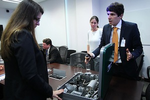

Communication
Although high executives will most likely have been schooled in the United States or the United Kingdom and will therefore speak fluent English, it is important while conducting business in Brazil, to speak Brazilian Portuguese. European Portuguese will not work in your favor. This is due to the dialect and difference in words from one form of Portuguese to another. You should also avoid speaking Spanish, as this is viewed as culturally insensitive. If you do not speak Brazilian Portuguese fluently, you will want to retain an interpreter.
Cultural Grammar
When meeting a potential Brazilian business associate, it is important to make sure that your business cards have one side printed in Brazilian Portuguese. When offering your business card it should be presented with the Brazilian side up.
Business
Culture of Business in Brazil
If you are looking to do business in Brazil, the information on this page will help to increase your learnability when it comes to doing business in Brazil or in dealing with Brazilian associates.
Brazil is a hierarchical culture, and this is adhered to in business. Executives are held in very high regard and are greatly respected. When orders are given, they are very clear and very detailed. A subordinate will not do more than they were asked, as this would be seen as over stepping their authority. Also, you will never see a subordinate arguing, disagreeing with or questioning those orders. It is highly disrespectful and is simply not done.
Brazil Cost
What is known as the Custo Basil or Brazil Cost, is the very real cost of doing business in Brazil. The taxes in Brazil are prohibitive, and there is a great deal of corruption, legal complications, poor infrastructure and some issues with government inadequacy. For these reasons, it is very important to use local lawyers and accountants. Many people that do business in Brazil will hire a despachante (middleman), they can be quite useful in helping you to navigate the local governments and complexities.
Subtext in Business
Brazilians are very high energy and tactile. It may appear that a Brazilian business associate is being rude or aggressive, when in fact, it is quite normal and customary to show a great deal of emotion when it is something they believe in. It is also very normal to be interrupted at any given time that you are speaking. It may even appear that the person speaking is angry, yet this is actually a sign of passion and again, is very normal in Brazilian culture.

Apparel in Business
Dress in business is a formal affair. High-level executives are expected to wear a three-piece suit. An office worker most often wears a two-piece suit. Women in business are expected to dress to impress and are expected to be somewhat flamboyant and highly accessorized.